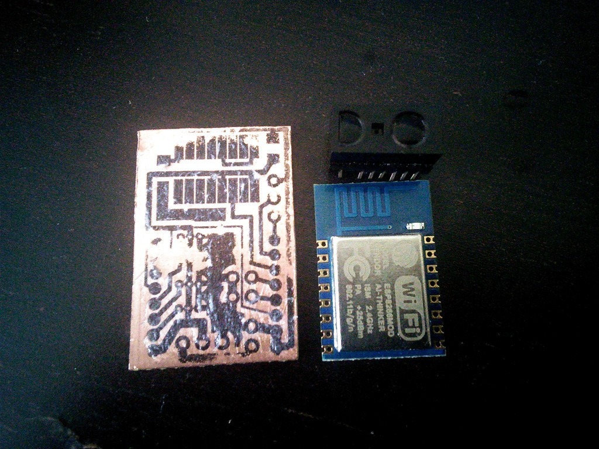

PCB Fun¶
Published on 2015-06-04 in µBob biped robot.
The PCB I made for µBob last time didn’t work out so well, so I set out to make another one. This time with the ESP-12 module, as the ESP-03 I used before got broken in transport (I soldered some parts, including the power switch, directly to the module, and when there was some force applied on them during transport, they stripped the traces on the module).
I also got inspired by the Bob jr. robot and decided to make it a proper autonomous robot – with a distance sensor! I’m going to use one of those teeny little digital Sharp sensors, this one should detect stuff between 2 and 10cm, which sounds about right for this size of a robot.
So I have my PCB designed, and now I’m struggling with transferring the toner from a print onto the board. The latest attempt is almost acceptable, if not for several places where the toner didn’t transfer for some reason:
